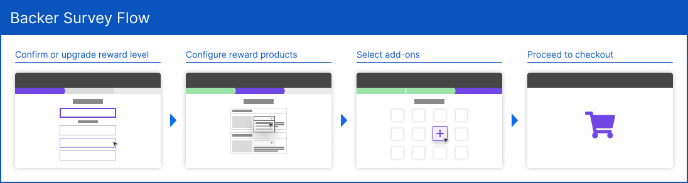
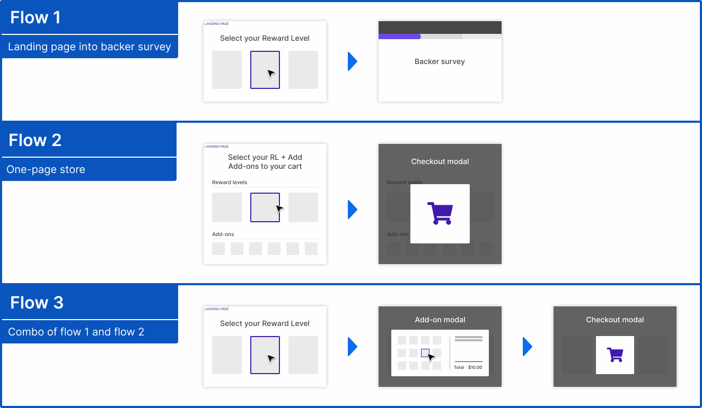
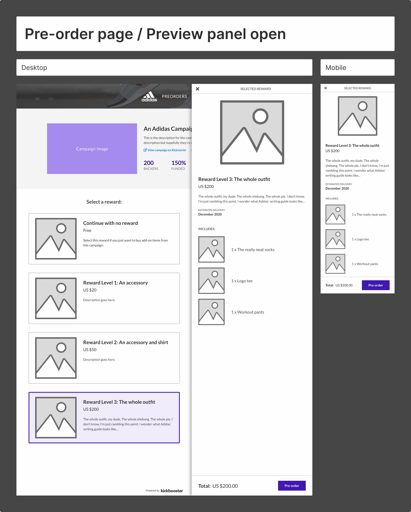
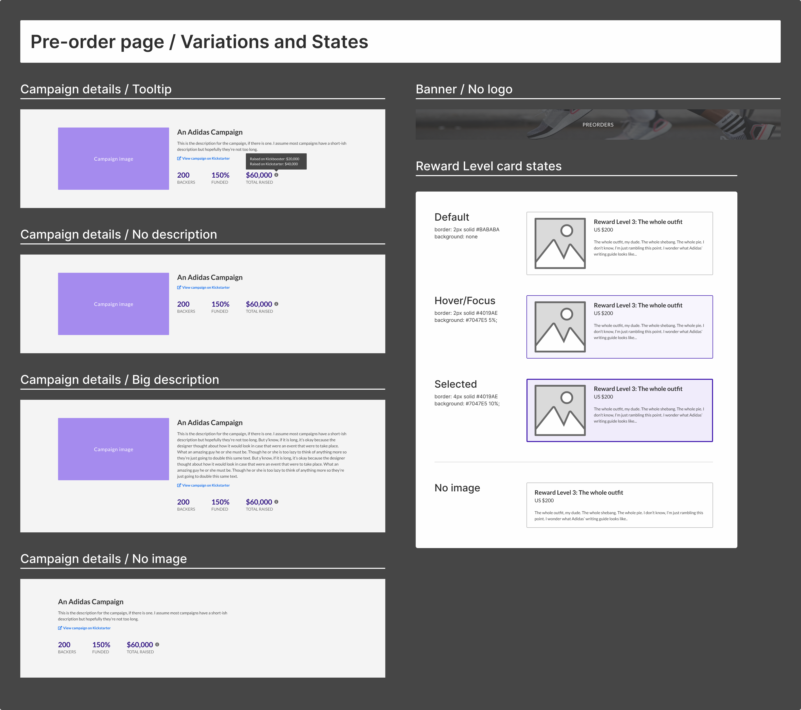
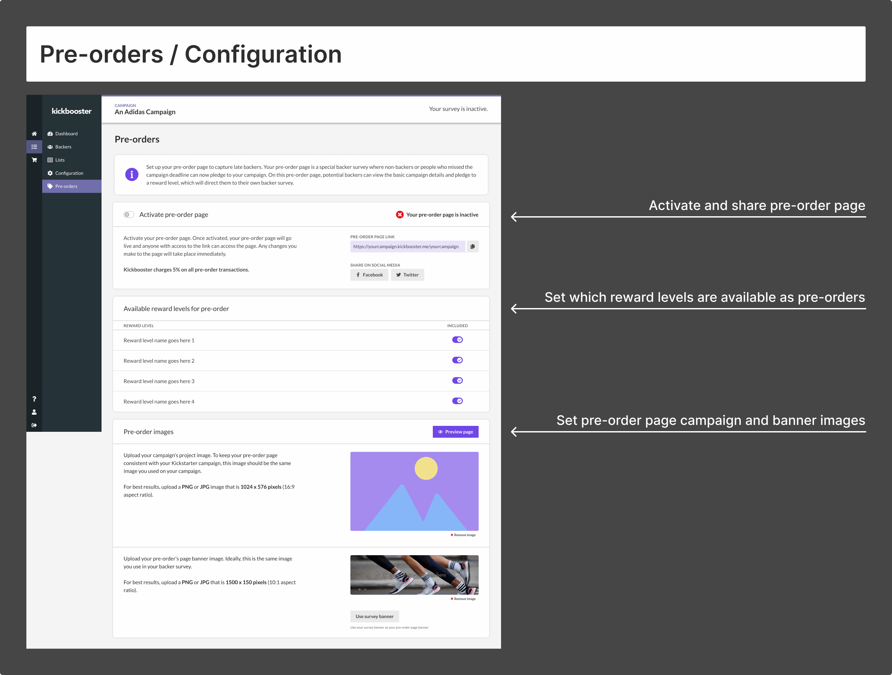

Introduction
When a successful crowdfunding (e.g. Kickstarter or Indiegogo) campaign ends, acquiring new backers becomes a tricky task. When a campaign ends, new backers must now wait until the crowdfunding product becomes commercially available. This is where a pre-order page comes in. A pre-order page acts as an extension of the campaign, allowing late backers the chance to pledge after the campaign has ended, thus extending the life of a crowdfunding campaign.
This is great for both sides: the campaign gains another excited backer, and the backer gets to essentially purchase a crowdfunding product that they may have missed the chance to get. The pre-order page allows late backers to select the reward they would have gotten during the campaign, and takes them through a survey to configure their rewards (if necessary), add any additional products, and pay for their order. Because campaigns with a pre-order page have both ended and are successful, backers can have confidence that they’ll receive their pledged product soon and not have to wait upwards to a year for it.
When a crowdfunding campaign ends, new backers must now wait until the crowdfunding product becomes commercially available. This is where a pre-order page comes in. A pre-order page acts as an extension of the campaign, allowing late backers the chance to pledge after the campaign has ended...
This case study will explore my process and share my thoughts behind designing Kickbooster’s pre-order feature.
Project background
Development for this project came shortly after the closed beta of Kickbooster's pledge manager. A pledge manager is a crowdfunding tool that allows campaign owners to capture backer's shipping information as well as offer reward upgrades and product add-ons. This is done through a survey, called a backer survey, which campaign owners send to their backers after the crowdfunding campaign has ended. Kickbooster's pre-order feature would leverage most of the pre-existing backer survey's infrastructure, as the two would be closely related.
Prior to this project, we were familiar with the concept of crowdfunding pre-orders, such as Indiegogo Indemand. It was a feature that was on the roadmap but initially further down the queue. What drove this project forward was requests from users from the pledge manager closed beta. Because our team worked closely with our beta users, we better understood the post-campaign management process and understood the value of having the backer survey and pre-orders both managed on the same platform. In addition to this value add for campaign owners—because the pre-order feature would use the backer survey's infrastructure—it was very valuable to the business, as more surveys sent out meant more revenue.
Product decisions
Because of the team's limited dev resources and time, product decisions were made early on with the intent of iterating upon user feedback. The main decision was that of the pre-order user flow, in that it would simply be a prettier version of the first step of the backer survey, where the backer would select their reward and proceed with the backer survey. Of course, such a minimal version is far from optimal, but having been in the crowdfunding space for over a year, it wasn’t difficult for me to see the value in pushing this feature out—even a minimal version of it. Despite this, some exploration was done to explore different user flows, to be aware of what the feature could become in the future.
Going the simple route was the best decision, as the feature’s design could be modified once we received users' feedback and had better clarity on where the product team wanted to take it. The onus was on me to design it modularly to give it that flexibility in the future.
Constraints
- Limited time and resources: we wanted to get this feature out in a timely manner, with limited development resources, which would restrain what could be done design-wise. I'm quite conscious of ensuring a design is feasible, but I still work closely with the devs, updating them with each iteration just to make sure.
- Working within the current system: similarly to the first point, as our team had a lot of the structure of the feature in place for what this first version would be, the user flow and the page's design could not veer too far from what we could already do. Doing so would pose a lot of technical questions, which would not make it worth the time knowing we could simply use what was already made.
- Working with a third-party checkout: possibly the biggest constraint in allowing what could and couldn't be done. Since the backer survey used Bold's Checkout app to handle the checkout process, we were limited in where a user could checkout and the presentation of the checkout. This was the driving reason for why we utilized most of the backer survey for this feature.
Project details
| Timeline | September 2020 to December 2020 (4 months), while balancing other job duties and tasks |
|---|---|
| My role | Sole designer |
| Other contributors | 1 project manager and ~3 developers, also all of whom had other duties and their own separate tasks |
UI exploration and process
Establishing the flow
Once the main user flow was decided, I set off on a visual design exploration for what the page could look like. The primary functionality of the page was to select a reward level, which would then put users through a backer survey. That functionality would be the main focus of the page, but prior to working on the page, some questions I had were:
- What information [about the campaign] is important to display on this page?
- How should the reward selection into backer survey interaction work?
- How should the reward selection into backer survey interaction work?
- The age 'ol favorite: how will this page look in different screen sizes?
As this page could potentially be a backer's first exposure to a campaign, displaying the basic campaign details and media was important. Additionally, since the campaigns utilizing this feature would be finished and successful, displaying campaign stats may be a draw to potential backers.
The main functionality of the page is to select a reward level then proceed to a backer survey. Because users would technically be on this page and be redirected to another webpage (the backer survey), there needed to be at least one level of confirmation between the selection and the redirection. That is, user would confirm their reward level before moving onto the backer survey.
For this first version, the only known customizable portion of the page was the campaign image. Though depending on the final design, some colors of the page could be changed by campaign owners, but that was yet to be explored at this point.
Of course, whenever designing anything for the web, responsive considerations are always taken into account. This is always in the back of my mind as I design, so it is something I am always considering at every step. For me, designing for the largest screen size first simplifies the process, because once that's done, it's just a matter of stripping out the parts that should be prominent for smaller screen sizes. It's not always that simple, but a lot of common UX patterns cover most use cases when resizing from large to small.
Three options
At the end of my exploration phase, I came up with three options:
Option 1: Side panel
The main feature of this option is that upon selection of a reward level, a side panel slides out, showing the reward level's products with the pre-order button at the bottom of the panel.
Option 2: Simple
This option looked a lot like option 1, the difference being that the pre-order button appeared inside the reward level card, upon selection.
Option 3: Less simple
This option functioned similarly to option 2 but contained a different layout of the campaign information.
Design feedback
Running these options by both the Kickbooster product team and the design team at Bold, most people preferred option 1. Some people liked option 3, because of its different design, however, during one review, it was noted that there was not much we could do to safeguard against the campaign image and the banner image from clashing with one another. As well, there was a lot of potential with the top section looking unbalanced, which would happen if the campaign description was longer than three lines. What drew most to option 1 was its simplicity and the better option of viewing a reward level's products. In addition to its simplicity, it was the more dynamic option, which played well with the user flow that we were limited to. Thus, we went with option 1.
 Designing the configuration
With the main centerpiece complete, designing the configuration (the setup page) came next. The pre-order page itself didn't contain much complexity, so the configuration page was a relatively simple task. The main features of the configuration page included:
- Activating the pre-order page
- Sharing the link to the page
- Uploading the campaign and banner images
- Setting which reward levels will be included on the page
Another consideration of this page was where it would live. We considered that the pre-order feature be its own product, which would give it its own sub-menu within the main navigation. However, given that the feature was an extension of the backer survey, as well as the simplicity of the setup, we slotted the feature as another menu item within the pledge manager navigation.
Developer handoff
I had been working with my team for a little over a year at this point, so the Kickbooster developers have gotten used to how I work and how I lay things out in Figma. If they need clarification on something, or if a mock is missing something, I'm quick to respond to their Slack messages and provide whatever they need.
This feature was no different, though some additional assets were necessary to fully demonstrate the functionality of this feature. This included a few prototypes demonstrating the reward level selection (into the slide-in side panel). The interaction seemed fairly straightforward in my head, but at that point, I had a learned to keep assumptions to a minimum and if it won't take me much time, it wouldn't hurt to include it.
Not covered in this case study
Everything included in this case study covered about 85% of the design portion of this project. There were other important aspects that I did not touch on, including: page states, writing the copy, the email flows, the emails themselves, the activation flow, and probably one or two others I'm forgetting. I left these out of the case study because they are mostly uninteresting and there's little I can say about them. Not to diminish their importance to the overall feature, but they were just tasks that needed to get done to complete the pre-order feature.
What's next for pre-orders?
Now that pre-orders is a fully accompanying feature to pledge manager, like most agile teams, we patiently await user feedback. In addition to feedback, the key numbers we're looking at are usage and total funds raised through the feature. Even if a campaign had no plan to use a pre-order page, I like to think it would be a no-brainer to run a pre-order page post-campaign, as it costs nothing extra to campaign owners. One thing I'm interested in seeing is if every campaign that uses Kickbooster's pledge manager also utilizes the pre-order feature.
As we wait for the feature's numbers to rise, the next bit of design work for this feature is exploring the different user flows of this feature. As depicted earlier in this case study, the product team is aware of the different and potentially more user-friendly flows of what this feature could be. What stopped this feature from going a different route (for its first iteration) was the third-party checkout the backer survey uses. This will change soon as said third-party checkout is coming out with new features that would allow for a headless checkout, i.e. a user would not have to leave the page to checkout. I'm quite excited for this exploration as I'll have more creative freedom in finding a user flow that best suits this feature.
Project reflection
This is one of the first projects at Kickbooster that I felt good both going into and coming out. Which, may sound sad, but I find projects often don't go according to plan but this project did for the most part. Going into and during the project, I had comfort in leading design: explaining what I did and why; saying no to certain decisions; and considering all aspects of the feature. Then, coming out of the project, I don't have any regrets about how I went about it—I'm satisfied knowing I did my best with what I had.